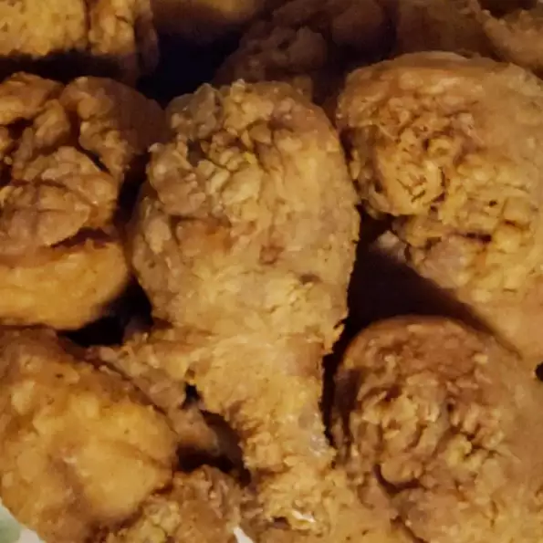

Fried Chicken

Description
"This was just like my mom used to make. It was good and basic. An iron skillet is really a must. I didn't really change anything. In the end, I drained off most of the oil and made cream gravy with the drippings. Great over rice. I also looked at the Deep South Fried Chicken Recipe. They are very similar and combined the instructions for both recipes. If you have not made fried chicken before I would recommend you look at the Deep South recipe as it has a lot of really great tips."
Ingredients
- 1 (4 pound) chicken, cut into pieces
- salt and pepper to taste
- 1 ½ cups all-purpose flour for coating
- 2 quarts vegetable oil for frying
Steps
- In a large skillet, heat oil over medium heat.
- Salt and pepper chicken pieces to taste, then roll in flour to coat.
- Place chicken pieces in skillet and fry on medium heat until one side is golden brown, then turn and brown other side until chicken is no longer pink inside and its juices run clear.
- Drain on paper towel and serve!